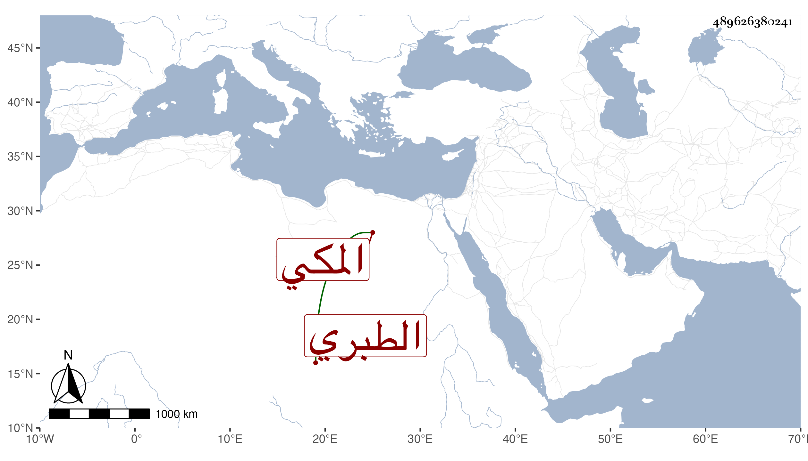

0902Sakhawi.DawLamic.ITO20230111-ara1.EIS1600.489626380241
Biography ID: 489626380241
625
فاطمة ابنة الرضى محمد بن الامام الشهاب أحمد بن الرضى إبراهيم بن محمد بن إبراهيم أم الامان ابنة امام المقام الطبري المكي ، سمعت عن عمها أبي اليمن المطري ؛ وأجاز لها في سنة سبعين وسبعمائة جماعة ، وتزوجها عبد الهادي بن العفيف اليافعي ثم بانت منه لظهور محرميه بينهما وله فيها مدح ، ثم تزوجها المحب النويري وأولدها أولادا ثم طلقها ثم تزوجها عمر بن عبد الله بن ظهيرة ثم طلقها وتأيمت حتى ماتت في رمضان سنة عشرين ليلا بضيق النفس ولم يعشر أحد بوقت موتها ذكرها الفاسي وقال وهي صهرتي أم زوجتي أم الحسين ابنة المحب النويري وفيها خير وعقل .
